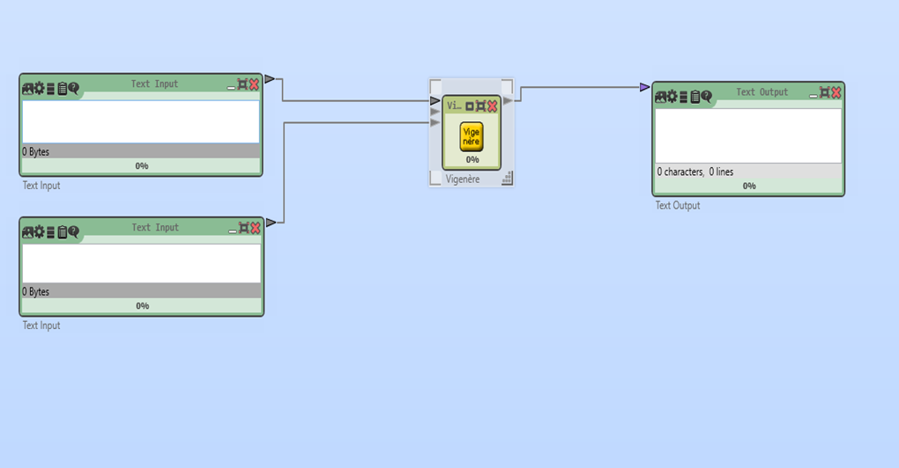
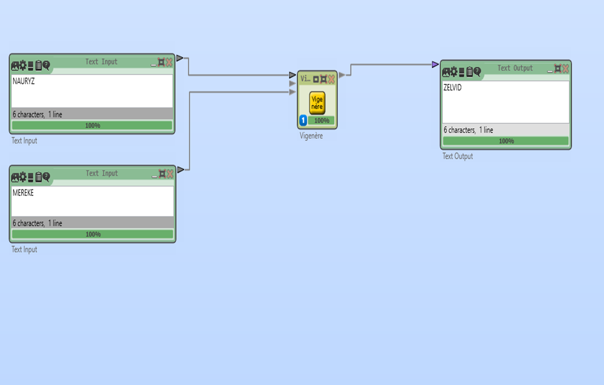

ВИЖЕНЕР ШИФРІ
Cryptool 2 (CT2) — криптографиялық әдістерді зерттеу мен оқытуға арналған бағдарламалық орта. Бұл нұсқаулықта біз Виженер шифрын пайдаланып, мәтінді шифрлау процесін қарастырамыз.
1. Жаңа жобаны бастау
Home → Жаңа (New) таңдаңыз. Жаңа жұмыс кеңістігі (Workspace) ашылады.
Қажетті блоктарды жобаға қосамыз:
- Text Input (2 дана, біреуі шифрланатын мәтін, екіншісі кілт)
- Text Output (Шифрланған мәтінді алу)
- Vigenère (Виженер шифрлау блогы)
Text Input (Мәтін енгізу)
Мақсаты: Қолданушы енгізетін ашық мәтінді немесе кілт сөзін сақтау.
Сипаттамасы:
- Бірінші "Text Input" блогы – шифрланатын ашық мәтінді енгізу үшін қолданылады.
- Екінші "Text Input" блогы – Виженер шифры үшін кілт сөзін енгізу үшін қолданылады.
- Бұл блоктар Vigenère Cipher блогына қажетті бастапқы деректерді береді.
Vigenère (Виженер шифрлау блогы)
Мақсаты: Виженер шифрын пайдаланып, мәтінді шифрлау немесе дешифрлау.
Сипаттамасы:
- Бұл блок ашық мәтін мен кілт сөзді қабылдап, Виженер шифрі арқылы шифрланған мәтінді шығарады.
- Егер кілт сөз қысқа болса, ол мәтіннің ұзындығына дейін қайталанып қолданылады.
- Блоктың дешифрлау режимі де бар және өз алфавитімізді жаза аламыз.
Text Output (Мәтін шығару)
Мақсаты: Шифрланған немесе дешифрланған мәтінді көрсету.
Сипаттамасы:
- Бұл блок Vigenère Cipher блогынан шыққан шифрланған немесе дешифрланған мәтінді көрсетеді.
- Қолданушы нәтижені қарап, оны басқа жерге көшіріп пайдалана алады.
2. Блоктарды суреттегідей байланыстыру

3. Мәндерді енгізіп нәтижені көру
"Play" (▶) түймесін басып, шифрлау нәтижесін қараңыз.

Nauryz сөзін "Mereke" кілтімен шифрлап, "ZELVID" шифрланған мәтінін алдық.
Қорытынды
- Cryptool 2 көмегімен Виженер шифрын оңай шифрлауға және дешифрлауға болады.
- Бұл шифр Цезарь шифрына қарағанда күрделірек және қауіпсіздеу.
ПРАКТИКАЛЫҚ ТАПСЫРМА
1-тапсырма: Шифрлау
Өз есіміңізді Виженер шифрын қолданып шифрлаңыз.
2-тапсырма: Дешифрлау
Мысалдағы "ZELVID" шифрланған мәтінін дешифрлаңыз.
3-тапсырма: Шифрлау
Қазақша алфавит құрып, "ҚАУІПСІЗДІК" сөзін шифрлаңыз.